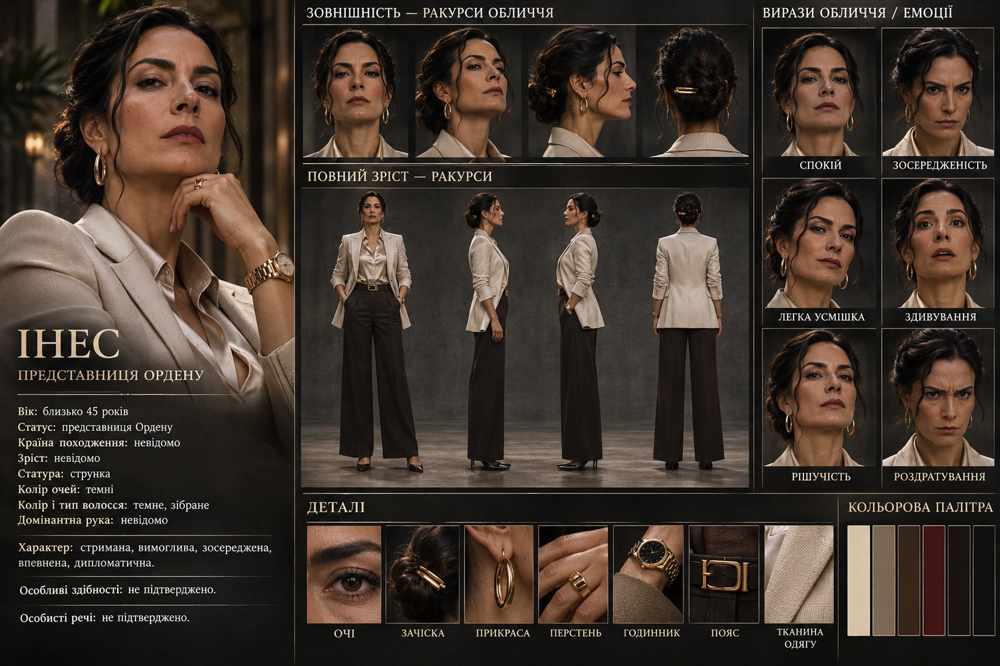

РОЛЬ У СЮЖЕТІ
Переговори як перевірка готовності до співпраці
Інес прибуває до Патрона Дому Сьєрри як представниця Ордену. Вона обговорює домовленості, але водночас тисне на співрозмовника, домагаючись конкретного ресурсу — порталистів, які мають перейти в розпорядження Ордену.
Вимога одного-двох порталистів без визначеного терміну має подвійний сенс: це і спроба закріпити вплив Ордену, і перевірка того, наскільки Дім готовий прийняти умови. За дипломатичною формою розмови відчувається прихована погроза.
ХАРАКТЕР І ПОВЕДІНКА
Стримана й вимоглива
У погодженому описі Інес постає стриманою, вимогливою, зосередженою, впевненою та дипломатичною. Вона не відмовляється від тиску, але подає свої вимоги в межах переговорів.
Манера поведінки: стримана, ділова
Стиль взаємодії: дипломатичний тиск
Походження: не встановлено
Зріст: не встановлено
ВІЗУАЛЬНИЙ ПАТЕРН
Зовнішність та образ
Зовнішність
У візуальному референсі Інес зображена приблизно сорока п’яти років, із темним волоссям, зібраним назад, і темними очима. Ці риси описують затверджений візуальний образ; окремо в книжковому каноні вони не підтверджені.
Одяг і прикраси
На референсі — світлий елегантний жакет, темні штани та стримані золоті прикраси. Це візуальна інтерпретація образу, а не підтверджений перелік канонічного одягу чи особистих речей.
Здібності та особисті речі
Підтверджених особливих здібностей і особистих речей у доступних відомостях не зазначено. Сам факт вимоги надати порталистів не означає, що Інес сама володіє портальними здібностями.
Канон і межі підтверджених відомостей
Сюжетно підтверджено, що Інес є представницею Ордену, приїздить до Патрона Дому Сьєрри, обговорює домовленості й вимагає одного-двох порталистів у розпорядження Ордену без визначеного терміну. Вік близько 45 років і риси характеру наведені в погоджених нотатках. Одяг, зачіска та прикраси взяті з візуального референсу й не подаються як окремі факти книжкового канону.